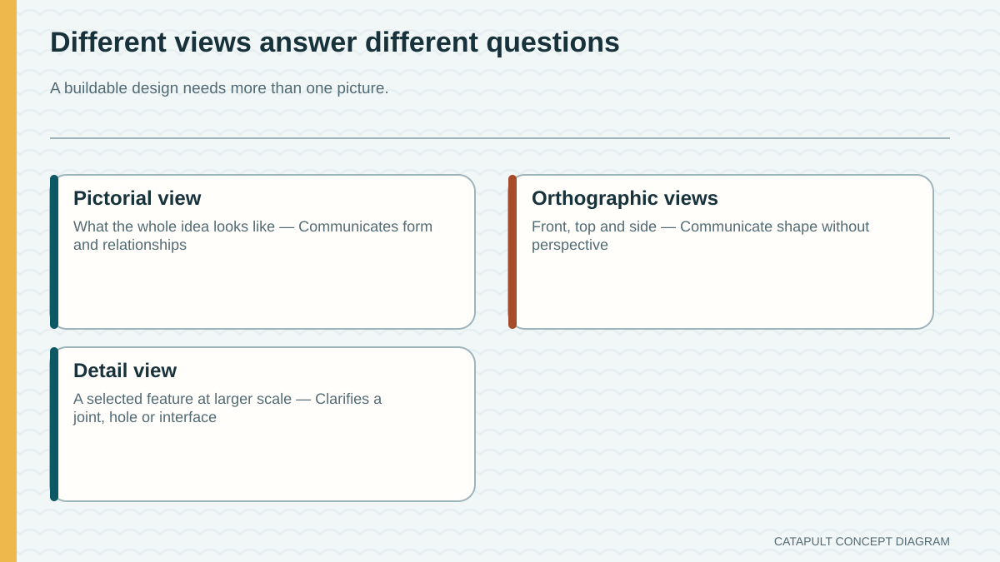
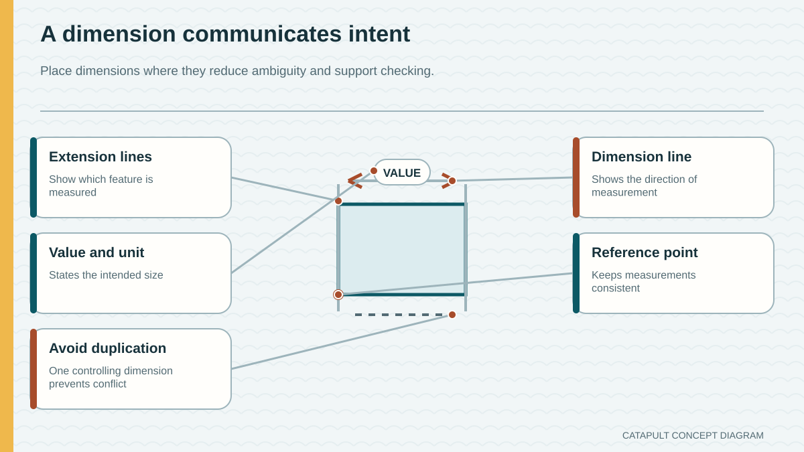
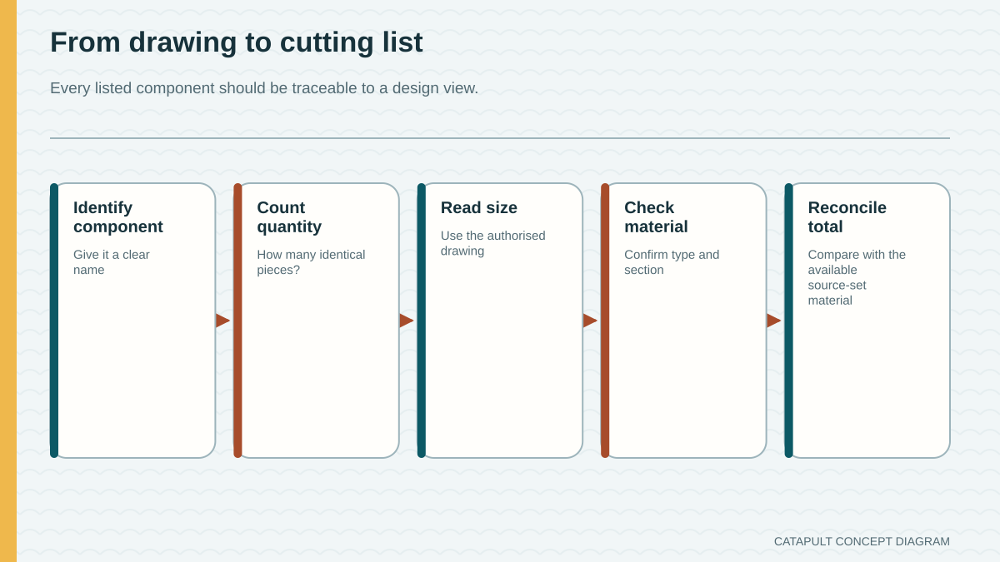

A neat pictorial sketch contains all the information needed to build.
Production communication also needs consistent views, labels, dimensions and material planning.
Module 5 of 10
A promising idea becomes buildable only when another person can understand it. Engineers develop alternatives, compare them with evidence, communicate the selected solution through drawings and labels, and account for material. Clear communication catches problems before practical work makes them expensive or difficult to change.
Use this page to learn and prepare. Follow your teacher's demonstration, approved tools, local safety controls and testing instructions for every practical action.

Theory 1 of 3
Divergent thinking means producing several genuinely different ideas before choosing. Changing only a colour or decoration does not create a different system. Alternatives might organise components differently, manage stability in different ways or use different relationships between the frame and moving parts. Early sketches can be quick, but each should communicate enough to reveal its main system idea.
A PMI comparison records plusses, minusses and interesting points. It is most useful when comments connect to the brief, materials, likely performance, production demands and evidence from earlier learning. Selection is not a vote for the prettiest sketch. A justified choice names the evidence, recognises a trade-off and explains why the chosen concept is the strongest candidate within the confirmed constraints.
Knowledge check
Choose an answer, read the feedback, then try again if needed. This is saved as practice on this device.

Theory 2 of 3
A pictorial drawing shows the overall form in a way that is easy to visualise. Orthographic drawing communicates separate front, top and side views without perspective. These views are aligned so the same feature appears in the correct relative position. Part labels and dimensions turn a drawing from a picture into production information, but only when they are readable and consistent.
Every view describes the same object. If a part is shown in the front view but its depth is missing or contradictory in the top view, the design is not yet fully communicated. A designer checks corresponding features, repeated part labels, overall fit and whether all required information is present. The aim is not artistic shading; it is clear, accurate information that supports teacher review and later planning.
Knowledge check
Choose an answer, read the feedback, then try again if needed. This is saved as practice on this device.

Theory 3 of 3
A cutting list links the drawing to material planning. Useful columns include material, part, length, quantity and total length. For each row, total length equals the planned length of one part multiplied by the quantity. Adding the row totals shows whether the design stays within the authorised maximum of 2400 mm of pine. The source wording for the pine cross-section is not reinterpreted here; use the exact teacher-approved stock information.
A correct total is necessary but does not prove that the plan can be produced exactly as written. Real cutting removes a small amount of material called kerf, and some material may be needed for checking or faults. How to allow for the selected process is teacher controlled. This is why a cutting list is normally reviewed before production: it gives the teacher and student a chance to find arithmetic errors, missing parts or an unrealistic sequence.
Knowledge check
Choose an answer, read the feedback, then try again if needed. This is saved as practice on this device.

Worked example
Vocabulary
Common traps
Production communication also needs consistent views, labels, dimensions and material planning.
It is the maximum total planned pine length, found by adding all row totals.
Video learning · 2:02
College & Career Ready Labs | Paxton Patterson
Watch for: Which three views are used, and how do the reference lines keep matching features aligned?
Source boundary: Drawing convention only; it supplies no Catapult dimensions.

Inspect the drawing-views diagram and match features across front, top and side views before returning to the authorised Catapult prompts.
The privacy-enhanced player loads only when you choose it.
Applied Learning Activity
Practise finding agreement and conflicts across idea notes, technical views and a cutting list.
Evidence to save: PMI decision, two consistency checks, arithmetic result and readiness decision, saved as formative practice.
Type the response, reasoning or record requested above. It autosaves in this browser.
Use: ‘The records agree/disagree because ___. Before production, ___ must be confirmed.’
Write a change note that updates a label, one view and the cutting list consistently, without creating a Catapult dimension.
Higher-order evidence
A design package contains idea notes, a preferred concept, orthographic views and a cutting list. Explain how you would decide whether it is ready for teacher approval.
Type your response. No drawing is required. It autosaves in this browser.